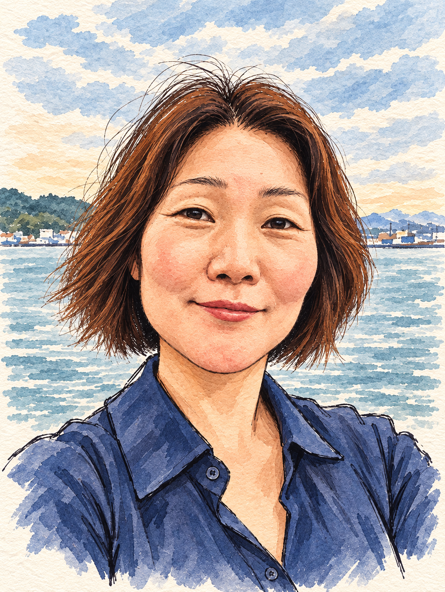

01 출판 · 학습 콘텐츠
415쪽 웹디자인 실기 학습서
웹디자인개발기능사 실기를 따라 배울 수 있도록 내용을 구성하고 출판용 PDF 원본을 완성했습니다. 판매용 미리보기 파일을 별도로 만들고 원본과 비교해 확인했습니다.
415쪽 출판 원본판매용 미리보기
교육 콘텐츠 · 학습 경험 · 디지털 도구
복잡한 내용을 배우기 쉬운 순서로 풀고, 필요한 화면과 도구를 직접 만듭니다. 책 한 권에서 작은 앱까지, 아이디어가 실제로 쓰이는 순간에 관심이 있습니다.
제가 만든 것 보기
01 소개 아래로 내려보기 ↓
학습 내용을 정리할 때는 읽는 사람의 순서를 생각합니다. 디지털 경험을 만들 때는 실제로 누르고 듣고 말해 보며 흐름을 확인합니다. 기획, 제작, 검토를 오가며 하나의 결과를 끝까지 다듬는 방식으로 일해 왔습니다.
완성한 산출물과 현재 구현된 범위를 기준으로 적었습니다.
웹디자인개발기능사 실기를 따라 배울 수 있도록 내용을 구성하고 출판용 PDF 원본을 완성했습니다. 판매용 미리보기 파일을 별도로 만들고 원본과 비교해 확인했습니다.
인도네시아어 사용자를 위한 ‘한국어 한입’ 시제품을 만들었습니다. 첫 문장을 듣고, 음절을 살펴보고, 한글을 발견한 뒤 직접 말해 보는 흐름에 음성 재생과 녹음을 연결했습니다.
Creator Platform에서 콘텐츠, 상품, 주문과 신청으로 이어지는 운영 흐름을 설계하고 구현했습니다. 화면이 실제로 이해되고 작동하는지 사용 흐름을 점검하며 다듬었습니다.
실기 과정을 읽고 따라갈 수 있는 학습서로 정리했습니다.
언어 학습의 한 문장을 화면, 음성, 녹음으로 구체화했습니다.
PDF의 원본 일치, 앱의 기능, 서비스의 사용 흐름을 점검합니다.
함께 만들 다음 경험을 위해